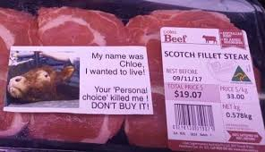

Inicio
Guia
Contacto
Sucursales
Registro
Maltrato Animal
¿Por que ser vegano?

Cada año a nivel mundial, se les quita la vida a más de 70 mil millones de animales terrestres para poder satisfacer el apetito de la gente. No somos nosotros quienes les quitamos a sus crías mientras las madres gritan por ellas, o las picaneamos con garrotes cargados eléctricamente, o les cortamos la garganta; pero, cuando compramos la carne, estamos pagando para que otra persona haga todas esas cosas -y más- por nosotros. Los animales de granja sienten placer y tristeza, emoción y resentimiento, depresión, miedo y dolor. Son mucho más sensibles e inteligentes de lo que nunca hubiéramos imaginado.
VIVE VEGAN Y DEJA VIVIR.
Producción mundial de carne en 2018
Especies utilizadas
Producción (t)
Porcina
115 millones
Caprina
5,7 millones
Ovina
9 millones
Avícola
98,4 millones
Cunícola
1,2 millones
Vacuna
65,7 millones